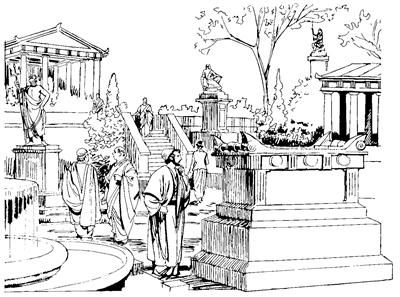

As Tesalonika nimiri Paulusap Silasap sembe yanghang alamsieka (17:1-9)
17
1 As Filipi laplobi agha Paulusap elkaboap as Amfipolis inagha as Apolonia inagha palamekti, as Tesalonika piek. As enekoag Yahudi nimiri Allahag yubu lerop ae nhon wamog. 2-3 Allah yubu lerop sum taogpa, Paulus nenekori ora asag ulamog saog uro as Tesalonika anekoa babe Yahudi nimiri Allah yubu lerop ae enekoag wa'alamog. Wa'alamogti, Allah yubu lerop sum ik wilindi tibin nenero ambarelamsiogti, “Allah yubu samenag toro pirop mome kembi agha Allahri, ‘Mog so'oag nimi taulbahimendi, saelbamsululam,’ aro wepto poghol aogne poneko sembe nu el taap. Samenag mome toro pibek nimiri saeag agha undo uro yabilulne sembe Allahri ambarelamsiogne, ‘Na Allahri wepto poghol anunne poneko mog so'oag yaleba, nimiri ya'ag obikpa, seklero tebaleri, nimi ya'ag teptopne nusamag agha kamag talul,’ aro Allahri ambatsiog. Allahri, ‘Mog so'oag nimi taulbahimendi, saelbamsululam,’ aro wepto poghol aogne Yesus ponekoag uro yabiogne sembe ambarelamsin,” aro Paulusti ambato wana heklamsiogpa, sindi “El tahabe,” aro hailamekne eldi tibin nenero ambarelamsiog.4 Paulusti wene aro ambarelamsiogpa, Yahudi nimi etpareri, “Paulusti ambarelamsilne sik,” senelamekti, Paulusap Silasap sae tiptangto ma'aldalamek. Ma'aldalamek nimi ane Yunani nimi Allah omektop nimi maikno babe, kelabo as Tesalonika kelabo sikinin yabo saog uro wamek kelabo maikno babe sindi, “Sik” senelamekti, Paulus elkaboap ma'altalamek. 5 Sin ma'altalameka kembi agha, Yahudi nimiri, “Nimi maiknori sin phende maiplamsiang,” aro wana yo senelamsiek. Wana yo senelamsiekti, Yahudi nimi tanekori ulamekti, malia ulamek nimi ambengka uro urop nimi etbare sae kiliro topsiekti, “Put-put ana ulamukang,” aro Yahudi nimiri “Unulamlulom,” aro arukahiek.
Wene aro arukahiekpa, put-put alameknang anekori as aneko nimi wana bobo nenelamsiek. Wana bobo nenelamsiekpa, as taneko nimiri, “Yanghang alamsiberi, yag lambahukap” aro poloro winiptaek. Poloro winiptaekpa, Yahudi nimiap put-put arop nimiap tanekori, “Paulusap Silasap ero saelbahiberi, poloro winiptaang nimi saeag nembahukap,” aro sikinkae Yasondi ae kwerekto wa'iek. 6 Kwerekto wa'iekti kemelamsiekpa, Paulusap Silasap orog wamdekpa, sikinkae Yasonap Yesusag “Sikne” aro seneragtop nimi etbareap saelbahiekti, kiliro so'oag lelepto poa palamsiekti, nimi nubu nang as eneko saelbamsiek nang saeag tarel phiek. Yubu haum aro poa palamsiekti, “Mog so'o as tala-tala tam palilamdangba, yubu talamla nimi taneko wene nuri asag yingkilamdang,” alamekti kiliro pabalamsiek. 7 “Yasondi Silasap Paulusap kiliro nuri asag palilamsil. Roma nimi sembe yubu sia leropne nubunge Kaisardi yubu tam karepto pibog aghana, yarek nimi anekoap, sikinkabo tanekoapti philamang. Roma nimiri mog so'o wamap ane sembe, yubu sia leropne nhonog Kaisar wamla aghana, sindi ambarelamsirangne, ‘Yubu sia leropne nubunge nhon Yesus wamla,’ aro ambarelamsirang,” alamek.
8 Wene alamekpa, nimi maikno tanekoap nimi nubu nang tanekoapti ka'ebaekti, wana samsamolopsiogpa wamek. 9 Wana samsamolopsiogpa, wamekti, nimi nubu nang tanekori Yasonap Yesusag seneraglamek nimi tanekoabag lelamekti, “Kal ma'al nunag tatsumundi, aghabogna pululom. A'unkabori Yesus poneko yubu ambarelamsirangne ane sembe, ‘Nunkabori nen yubu ane ambatsin koma nuri asag agha lambarukang,’ aro salag pipmundi, kal ma'al tatsululom,”a aro nimi nubu nang tanekori wene seekpa, kal ma'al tatsiek. Tatsiekpa, tobekti, “A'unungeag pululom,” seekpa, lambaek.
Paulusap Silasapti Berea nimi Allah yubu ambatsireka (17:10-15)
10 Lambaek sumeneko inipnag Yesusag “Sikne” aro seneragtopnang tanekori “Nangkabo, pururom,” seekpa Paulusap Silasap as Berea pirek. Aneko pirekti Yahudi nimiri Allah yubu lerop aeag aneko wa'irek. 11 Yahudi nimi agha as Tesalonika wamek nimi taneko wana yo nimi wamek aghana, Yahudi nimi agha as Berea wamek nimi wana aingnirop nimi wamekti, wanaag sol wali, wali uro Allah yubu ka'elamek. Ka'elamekti, “Paulusti Allah yubu ambarelamsilne nene sik to, kom to,” aro seneraglamekti, Allah yubu samenag toro pirop mome sop-sop lelekto kemelamek. 12 Berea nimiri, “Sik to, kom to?” aro Allah yubu lelekto kemelamekti, Yahudi nimi agha as Berea wamek nimi maiknori Yesusag “Sikne” aro seneraglamekpa, Yunani nimi sikinin yabo saog uro wamek nimi taneko babe, Yunani nimi kelaboap nengaboap sin maiknori Yesusag “Sikne” aro seneraglamek. 13 As Berea nimi maiknori Yesusag seneraglamek aghana, “Paulusti as Berea nimi Allah yubu ambarelamsil,” ana Yahudi nimi agha Tesalonika wamek nimi tanekori ka'ebaekti, “Paulusti yubu ka'ebaukang kom,” aro as Berea aneko piek. Piekti, put-put aro wana aluktop yubu ambarelamsiekpa, ka'elamekti nimi maikno sikin sip tangto “Paulusti ambarelamsilne karong,” senelamek.
14 Wene alamekne sembe Paulus elkabo Yesusag “Sikne” aro seneragtop nimi tanekori mag longorop mag laut abolag sip poghol piekpa, Silasap Timotiusap agha as Berea aneko wamdek. 15 Paulus neneko elkabori enero poa as Atena pil piekti, yalamekpa Paulus nenekori, “Silasap Timotiusap menag-menag na amik yarukang,” aro yubu pibog.
Paulusti Atena nimi Allah yubu ambatsiogha (17:16-34)
16 As Atena aneko piogti, Silasap Timotiusap sembe nang-nangaro tibogto wamsiogti, as enekoag nimi saeri sunurop mema phalamekne maikno wamogha kembaogti, Paulus wana ikin sembaog. 17 Wana ikin taogne sembe, Yesus sembe ambarelamsiogti, eldi yubu ka'elamek nimiap sop-sop habildalamekti, “El tahabe,” aro hailamekne tibin nenero ambarelamsiog. Yahudi nimiri Allah yubu lerop aeag wa'alamekti, Yahudi nimiap Yahudi sisa kom nimi Allah omektop nimi tanekoap Yesus sembe ambarelamsiog. As Atena nimiri nia mangkina pil wa'ina tolamekag babe Paulusti sop-sop palamogti, nimi pangyang ulamek nimi taneko wamekne babe ambarelamsiog. 18 Nimi etbare mome ambatsirop nang Epikurosti seneragtopne saelbamek nangap,b Stoari seneragtopne saelbameknangap,c Paulusap alniro yubu saro haibil talamek. Haibil talamekti, Paulusti yubu walinge Yesus sembe ambarelamsiogti, “Nimi teptopne kamag tanep,” aro wene seogne sembe, nimi taneko etbareri, “Nimi ene el wamlare? Eldi seneragna olog aghana yubu pam andari lelamla,” alamekpa, nen nimiri, “Nimi eneri mema ora mog so'oag nimiri phalamangne nu ekonne ambarelamsil, te?” alamek.d
19 Wene alamekti, Paulus neneko tam kareptobag Areopagus yimag poa piekti, “Andi yubu tam wendogne lelamlamne nene nu babe ka'ebaukapti, nen ma'aro ambatsi,” alamek. 20 “Andi lelamlamne nuri aoag olog ka'elamabag agha lelamlamne nene sembe, ‘Sa'a agha lelamla,’ senelamap. Ane sembe, lag phoro ambatsisom?” alamek.
21 (As Atena wamek nimiap nimi ora asag agha sekelingkirop nimi tanekoap oraba uan koma yubu tam wendogne sembe ngagto ka'elamekti, wamek.)
22 Wamekti, “Ambatsisom,” alamekpa, Paulus neneko Areopagus yimag aneko poloro winil talamek nimi whingag sekogti, yubu lelamogti, “Atena nimi nangkabo, a'undi mema phalamlomne sol wali uro ulamlomne kemelamsin. 23 A'undi mema phalamloma tane sembe ina yabalamnori, mema pharobag nhon kemelamno. Kemelamnoba, mome toro piplumne lilimna ane: “Mema nimiri ekon uropne sembe,” aro mome toplumdi, mema pharobag ane piplum. A'undi mema ekon urop mema phalamlomne poneko sembe wene nari a'unag ambatsinun.e

24 Allahri nia mangkina so'oag wamlange sumbaogti, im so'o saelbamsil. Im So'o Saelbamsilne poneko nimi saeri mem ae soropneag ua urop kom.25 Imap so'oap sumbaogne ponekori nimi ni kamag nenelamsildi, hain tarelamsildi, ni nuri saeag wamlangena tarelamsilba, nu nimi mog so'oag nimiri, ‘Imap so'oap sumbaogne poneko el teko wamla,’ sembanep kom. Nuri saeag agha el yepnep kom.26 Yum-yum samenag nimi nhon sumbaogneag agha nimi maikno likto palamogpa, nimi mog so'oag nimi likto piek. Nimi likto piekne taneko ‘Nimi tala-tala wamikti, mog so'o to'op taukang,’ aro Allahri nimi sumbahiog. Sumbahiogti, kareplamogti, ‘Nimi mog so'o a'ero-a'ero wamukangne, tane nhon, tane nhon wamukang,’ aro karebaogti, pipsiog. Apna, ‘Nimi ane ko'o eneag wamlul, nen nimi li ko'o nhon likto pilul,’ aro karepto pibog.27-28 Allahri karepto pibognena, ‘Nimi Na whing ebaneikti, mololamniikti, “Yepsi,” aro Nanag ebanukang to kom to,’ aro Allahri undo unuaog. A'uni yabo nimi nubu nangdi sepna siplamekti, ‘Nu mog so'oag nimi Eldi mangaro likto pipsiogne wamap. Ot Eldi saeag agha hain eplamapti, senelamapti, lebe alamap,’ aro siplamek. Nu mog so'oag wamapne el wamlange weag wamla kom ane sembe, sae nginikto ulamebeba, el nunag lag talul.
Paulusti as Atena nimiri mema pharobag nhon kemelamogpa, Atena nimiri mome tobekne, “Mema nimiri ekon uropne sembe,” aro mome toro pibek. (ACT 17.23)
29 Nu mog so'oag nimi Allahri mangaro likto pipsiogne wamap ane sembe, nimiri ‘El imag uropne hain tarelamsilne poneko sunumna sumbaukap,’ sembaheng kom. Leng-leng arobaap, kororopneap, wali kirikap tobiagha nimi saeri walia sunuroba taneko El imag uropne hain tarelamsilne poneko sunumna sumbanep kom. 30 Nu mog so'oag nimi limituk uro wamuburi, ‘Hain tarelamsiogne poneko sunumna sumbaukap,’ aro lebe arop komne agha sunulamubu. Sunulamubunge neneko sembe samenag Allahri, ‘Sin ekondi, ulamangba, unulamik,’ sembaogti, lipsiog aghana, wene Eldi nimi ni tala-tala wamang nimiag lelamlangena, ‘Samenag malia ulamlumne lipsimundi, Nanag yalulom,’ aro aruklamsil. 31 Allahri yubu pibogne, ‘ “Sumeneko uanun,” sembamsinge sunsunum uro, nimi nhon wepto sekitsinge sae pere agha nimi ni mog so'oag uropne tam ua uropne porog uro tam karebanun,’ aro yubu pibog. Wene aro yubu pibogne sembe ‘Samenag malia ulamlomne lipsimundi, Nanag yalulom,’ aro aruklamsil. ‘Nimi nhon wepto sekitsinge,’ seognena, ‘Nimi ni, “Allahri Yesus ane wepto sekirog,” aro el taukang' senenag agha Allahri nimi teptopne nusamag agha Yesus poneko kamag nembaog,” aro ambatsiog.
32 “Nimi teptopne nen kamag tanep,” aro Paulusti ambatsiogpa, ka'ebaek nimi taneko pogtaek. Nimi nenne tanekori Paulusag og sobaek aghana, nen nimiri, “Nangkae, wene selamne nene sembe nen lepmenba, nu ka'ebaukap,” seek.
33 Wene seekpa, Paulus yubu tam kareptop nimi winiltalamekag aneko laploa lambaog.
34 Wene alamekag agha ka'ebaek nimi etpare Paulusag sip talamekti, wene aro ambatsiogne sembe Yesusag “Sikne” aro seneraglamek. Sin Yesusag “Sikne” aro seneraglamek nimina, Areopagus yimag tam kareptopne nhon sina Dionisiusap, kelabo nhon Damarisap, nimi etbareap sin sik senelamek.